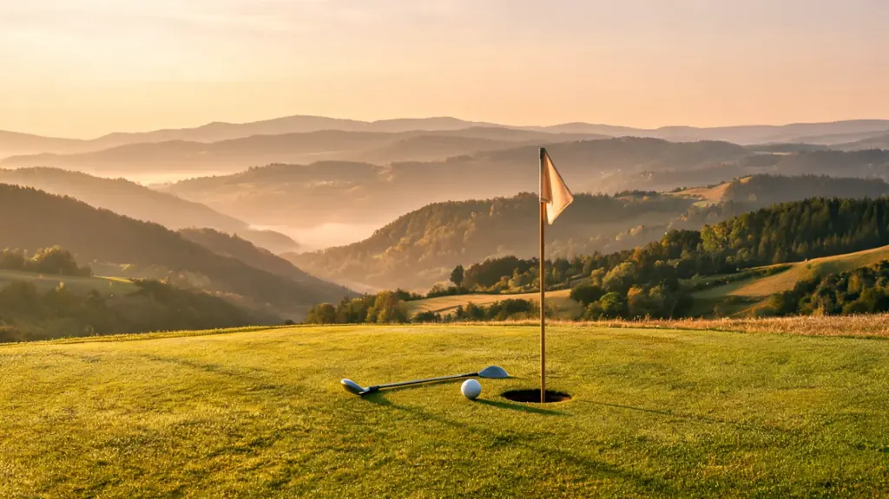
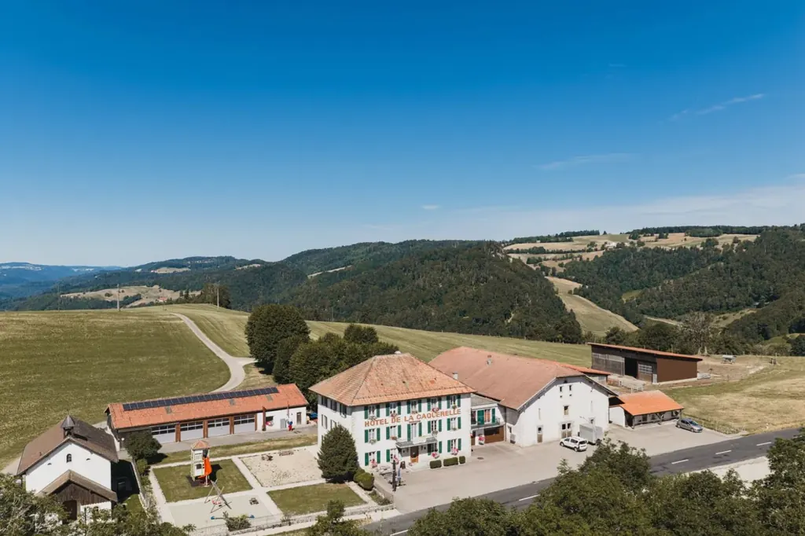
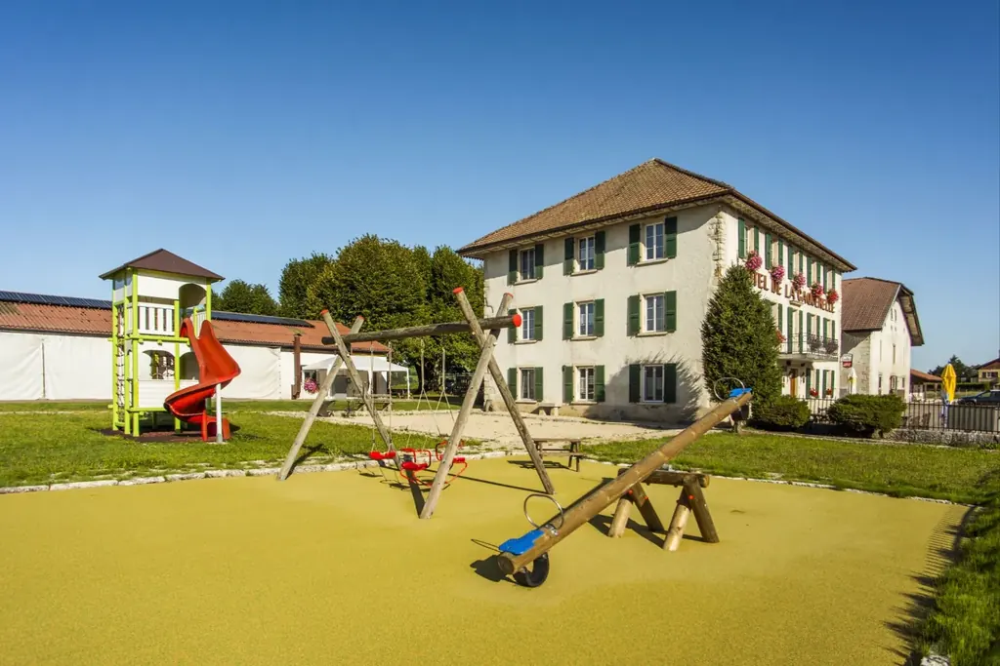
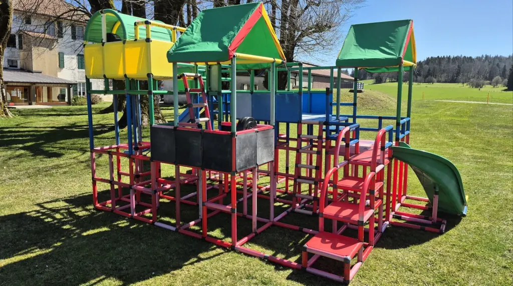
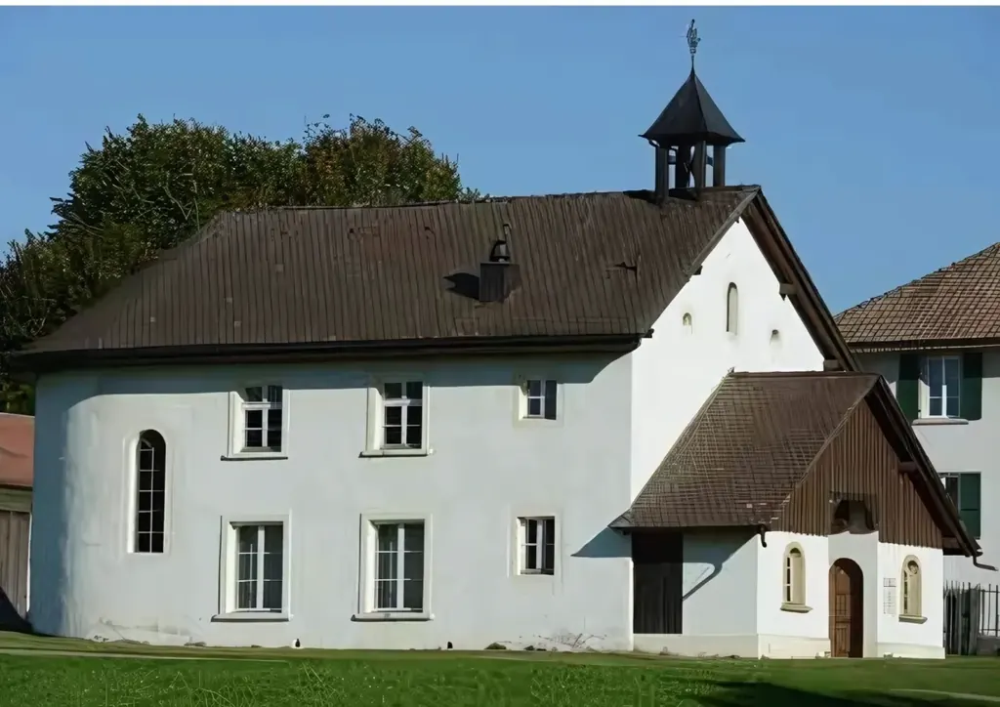
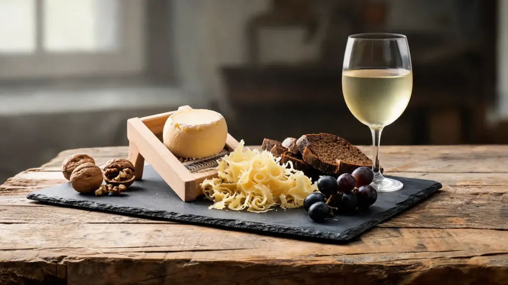

Swingolf
Le golf des prés, avec une seule canne et une balle souple : accessible dès le premier coup, et un panorama sur les crêtes en prime.

Swingolf, tir à l’arc, footgolf et pétanque au départ de la maison ; musée, places de jeux et tout le Jura à portée de route.
Le rendez-vous se donne à La Caquerelle. Les parcours sont gérés par la Maison du Tourisme de Saint-Ursanne, qui s’occupe des réservations.
Le golf des prés, avec une seule canne et une balle souple : accessible dès le premier coup, et un panorama sur les crêtes en prime.

Un parcours en sous-bois avec des cibles en forme d’animaux, après une courte initiation. Silence, concentration et lumière filtrée par les hêtres.

Le golf qui se joue au pied, avec un ballon de football, sur les pâturages autour de la maison. Les enfants adorent, les parents aussi.
Adulte CHF 20.– · enfant jusqu’à 12 ans 12.– · écoles 15.–. Réservation obligatoire ; pour les groupes dès 6 personnes, horaires à convenir.
Maison du Tourisme032 461 00 00

Deux grandes places de jeux accueillent les enfants à côté du restaurant. Pour une partie de pétanque entre deux plats, demandez simplement des boules au restaurant.


Dans l’ancienne chapelle Saint-Joseph (1893), ce petit musée raconte le col : les vestiges de la Sentinelle des Rangiers, la bannière des seigneurs d’Asuel perdue à la bataille de Sempach en 1386, les procès de sorcellerie et la célèbre course de côte Saint-Ursanne – Les Rangiers.
Et aussi : escape game à la gare de Saint-Ursanne, location de vélos et de trottinettes électriques à la Maison du Tourisme, golf 18 trous aux Bois (environ 45 minutes, d’avril à octobre).

Tariche – Saint-Ursanne, environ 2 h 30 · adulte CHF 60.–, enfant 40.–

Boucles vers Saint-Ursanne, Outremont et le Roc de l’Autel

Franches-Montagnes, à 20 minutes

Porrentruy, Courtedoux, Réclère

Cornol et Porrentruy

Bellelay, démonstration et dégustation